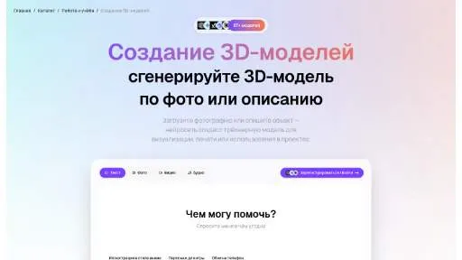
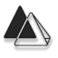
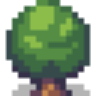
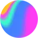
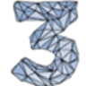

МолекулаАгрегаторы нейросетей
Молекула объединяет модели для текстов, изображений, видео и музыки. В одном аккаунте можно подобрать инструмент под этап работы, сохранить инструкции проекта и использовать готовые роли.
К задаче в МолекулеРаздел «3D»: варианты ИИ для этой задачи, описания возможностей и переходы к обзорам. Сравните несколько решений на одинаковом примере.
Подготовьте описание и визуальное направление сундука для игрового окружения. Укажите силуэт, материалы и места креплений; используйте концепт при обсуждении будущей модели, отдельно проверяя геометрию, развёртку и пригодность ассета в выбранном игровом движке.
Подготовь концепт деревянного сундука для приключенческой игры: широкая крышка, железные петли, заметный замок. Покажи основные детали спереди и сбоку, сохрани одинаковые пропорции и понятные места креплений.

Молекула объединяет модели для текстов, изображений, видео и музыки. В одном аккаунте можно подобрать инструмент под этап работы, сохранить инструкции проекта и использовать готовые роли.
К задаче в Молекуле«Dora» работает с графическими задачами дизайна.
«Interior Render AI» помогает представить оформление помещения.

В инструменте «Meshy AI» можно готовить трёхмерный объект для проекта. Ещё одно направление работы: получать изображения из словесного задания.
Minecraft Skin Generator создаёт игровой скин из текстового задания на русском языке. Пользователь описывает образ и получает файл PNG для Minecraft. В интерфейсе предусмотрен объёмный предпросмотр, позволяющий рассмотреть внешность созданного персонажа перед дальнейшим использованием полученного изображения в игре.
Rokoko отслеживает движения тела, пальцев и лица для подготовки анимации. Инструмент соединяется с распространёнными программами для трёхмерной работы. Кроме средств захвата движения представлены ресурсы и сообщество авторов, которые дополняют рабочий процесс при создании и передаче анимационных материалов.
Для «SIMA, Google’s AI That Plays Video Games Like a Human» сначала определите свою задачу и требуемый результат. Карточка относится к направлению «Игры».
«3dFy» подготавливает трёхмерные объекты.
«Blender Copilot» подготавливает трёхмерные объекты.

«Depthify AI» подготавливает трёхмерные объекты.
Glyf преобразует простые трёхмерные проекты в художественные 3D-изображения с участием ИИ. Продукт ориентирован на визуальную доработку уже намеченного дизайна. Среди направлений указаны материалы для портфолио и мобильных устройств, связывающие подготовку объёмного образа с его дальнейшим представлением в собственном наборе творческих работ.
«Herewe Studio» подготавливает трёхмерные объекты. «Herewe Studio» помогает подготовить игровой процесс.
Holovolo подготавливает видео и фотографии в формате VR180 с участием ИИ. Инструмент поддерживает разные платформы и работает с двухмерными материалами. Представленные ИИ-подборки трендов дополняют визуальные возможности, позволяя рассматривать подготовку контента в обычном и выбранном иммерсивном формате пользовательского проекта.
krikey.com предлагает создание 3D-анимационных роликов с помощью ИИ-инструментов. Пользователь может настраивать аватары и параметры диалога, связывая образ героя с повествовательной задачей. Продукт ориентирован на подготовку такого видео, где персонаж и словесная часть истории рассматриваются вместе вместо независимой работы только над статичным изображением.
Для «Customuse» сначала определите свою задачу и требуемый результат. Карточка относится к направлению «3D».

Kinetix относится к инструментам, которые помогают готовить трёхмерный объект для проекта. Ещё одно направление работы: собирать видеосцену по описанию или визуальному исходнику.
«Poly» подготавливает текстуры для визуальных объектов.

Сравнивать «AI Town» с другими инструментами раздела «Игры» удобнее на одинаковом исходном материале.
«Create AI (create.xyz)» подготавливает трёхмерные объекты.
«DraftAid» готовит визуальные материалы по заданию.
«Krikey AI» подготавливает трёхмерные объекты. «Krikey AI» создаёт портретные и аватарные изображения.
Сравнивать «Monster Mash» с другими инструментами раздела «3D» удобнее на одинаковом исходном материале.
«Pollinations» подготавливает трёхмерные объекты.
Сравнивать «Polycam» с другими инструментами раздела «Анализ изображений» удобнее на одинаковом исходном материале.

В инструменте «Spline» можно готовить трёхмерный объект для проекта. Ещё одно направление работы: создавать основу сайта или приложения.
«Avumi» представлен в разделе «E-commerce». При выборе проверьте нужную операцию и условия работы с результатом.

«In3D» подготавливает трёхмерные объекты. «In3D» создаёт портретные и аватарные изображения.
«Masterpiece X» подготавливает трёхмерные объекты. «Masterpiece X» также подготавливает текстуры для визуальных объектов.
Сравнивать «Octoeverywhere» с другими инструментами раздела «3D» удобнее на одинаковом исходном материале.
«Ponzu» подготавливает текстуры для визуальных объектов.
Сравнивать «Skybox Lab» с другими инструментами раздела «Игры» удобнее на одинаковом исходном материале.
«Versy AI» помогает соединить повторяемые рабочие действия.
Сравнивать «VREE Labs» с другими инструментами раздела «Разработка» удобнее на одинаковом исходном материале.
«Hiber 3D» подготавливает трёхмерные объекты.
Magic превращает неподвижное изображение в видео. Инструмент позволяет использовать готовую фотографию как исходный материал для создания движущегося визуального фрагмента.
Сравнивать «Reallife3d» с другими инструментами раздела «Видео» удобнее на одинаковом исходном материале.
Сравнивать «Bloomoon» с другими инструментами раздела «3D» удобнее на одинаковом исходном материале.
«Hexagen World AI» представлен в разделе «Игры». При выборе проверьте нужную операцию и условия работы с результатом.
«3DPresso» подготавливает трёхмерные объекты.
«CSM 3D» подготавливает трёхмерные объекты.
«PixCap 3D» работает с графическими задачами дизайна.
«Vector to 3D» работает с векторной графикой.
Charmed объединяет ИИ-инструменты для создания трёхмерной графики в игровых проектах. Набор включает генераторы геометрии и текстур, а также средство 3D-анимации. Продукт ориентирован на несколько этапов работы над игровым объектом, связывая его форму, поверхность и движение вместо одной отдельной операции с готовым изображением.
«Imagine 3D» представлен в разделе «Генерация изображений». При выборе проверьте нужную операцию и условия работы с результатом.
«Items Design (items.design)» подготавливает трёхмерные объекты.
Для «OpalAi ScanTo3D» сначала определите свою задачу и требуемый результат. Карточка относится к направлению «Анализ изображений».
Tripo используют, чтобы готовить трёхмерный объект для проекта. Ещё одно направление работы: получать изображения из словесного задания.
Сравнивать «Wonder Dynamics» с другими инструментами раздела «Видео» удобнее на одинаковом исходном материале.
Страница 1 из 2